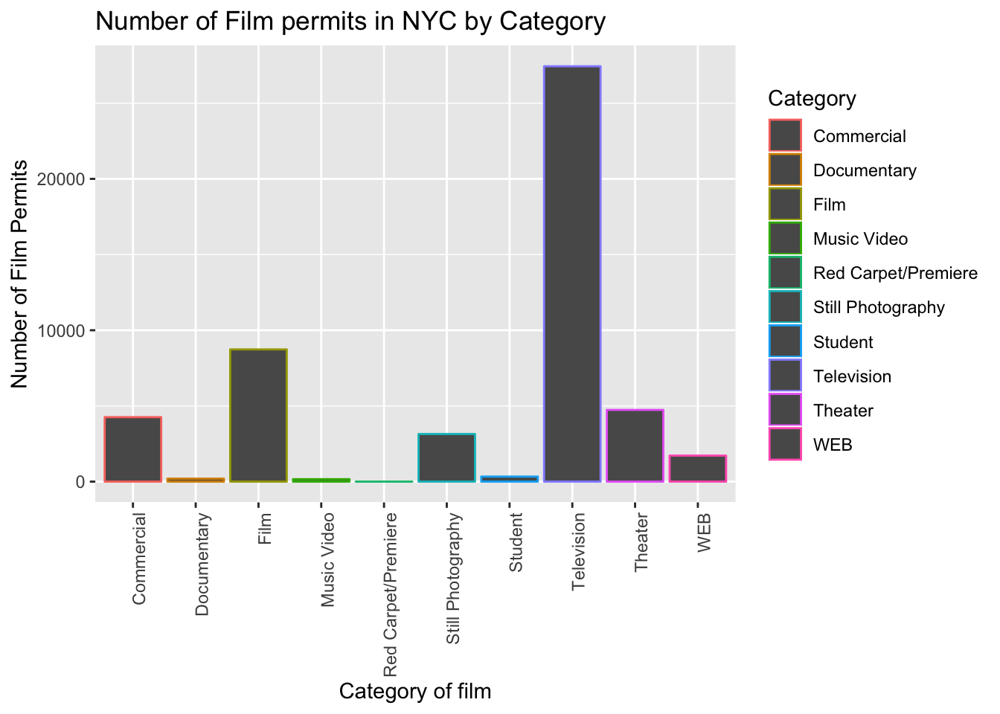
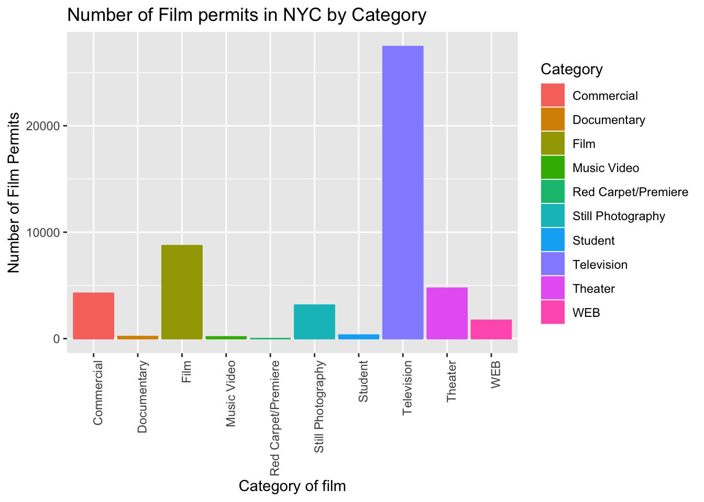
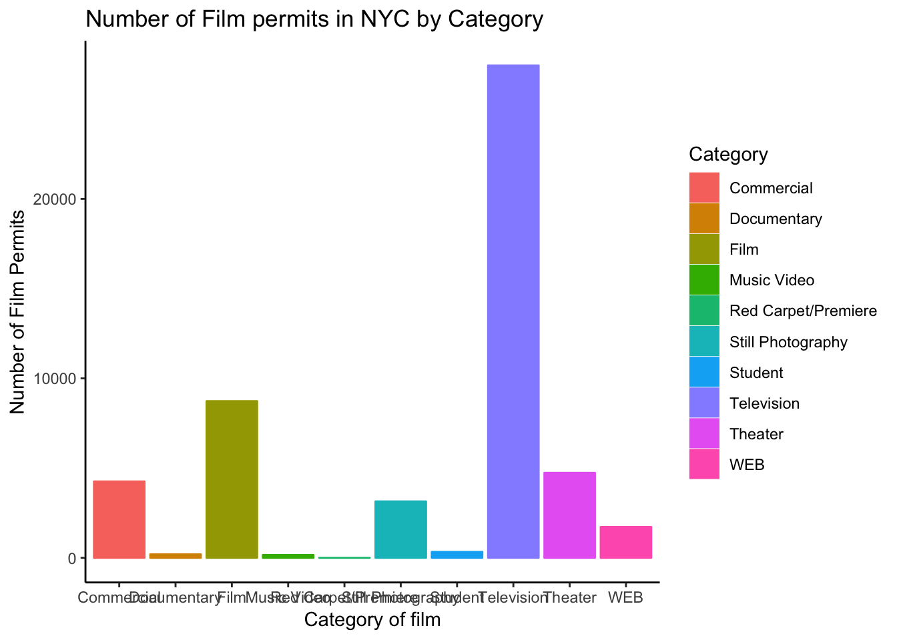
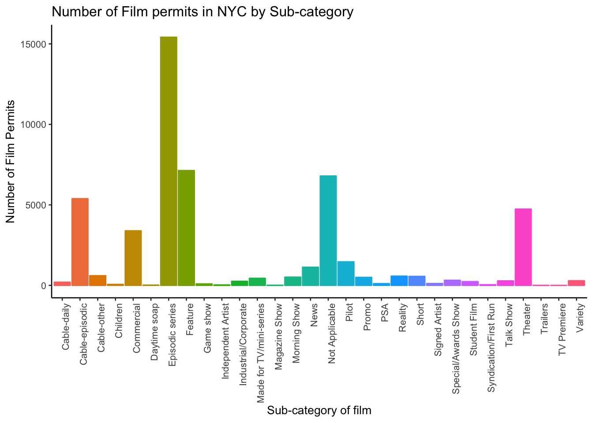

Chapter 1 Lab 1: R basics and Graphing Data
The commonality between science and art is in trying to see profoundly - to develop strategies of seeing and showing. —Edward Tufte
1.1 General Goals
- A brief tour of R-studio
- Some R basics
- Graphing data in R
- Graphing data using ggplot2
1.1.1 R basics Checklist
- Create a new R project
- Execute commands in the console
- Open and save new R script in the editor
- Write a short script, and run the commands in the script in the console
- View the contents of variables in the environment window
- View the contents of variables using the console
- Use the console like a calculator
- Store numbers in variables
1.2 A clean start
Good organization is key to data analysis. To explain, let me tell you a story to help you avoid being like me when I started learning how to analyze data. As a graduate student, I would collect data from experiments I was running. I stored the data in different files in different folders on my computer (all over the place, hard to remember where sometimes). I would copy the data into excel so I could look at it, do basic analysis, and reformat it so I could run statistics on the data using programs like SPSS. I would often have many different versions of excel spreadsheets with different versions of the data, sometimes stored in different folders. I would have many different SPSS outputs for each analysis I performed, sometimes in different locations. I would create tables and graphs in new excel spreadsheets, and edit the graphs in programs like Adobe Illustrator. All of these files would be all over the place. Sometimes, weeks, or months, or years later, I would revisit the data. After spending time to find it all, I would have to retrace my steps, doing detective work to figure out what analyses I had done. Ultimately, my previous work was so hard to understand, that I would end up redoing the analysis again. This was a messy process, and it took a lot of time. Wouldn’t it be nice if everything was in one place? R provides this solution.
1.2.1 Making an R project
R projects are a convenient way to organize everything you do in R. To create an R project in R-studio you can go to the file menu, and choose “New Project…”. Or, if you look in the top, right-side of the screen, you should see a little blue cube with an R in it. This shows your current R project. You can click this to create a new R project.
If you are using a lab computer, then insert a USB stick. Then click to create a new R project. Navigate to your USB stick drive. Give your project a name, like “StatsLab”. This will create a new folder on your USB stick. Inside the folder will be a new R project file.
Once you have loaded an R project, all of the new files that you make will be saved in this project folder. You can also put data that you want to analyse in this folder. Additionally, the output of your analyses (including figures etc.) will be saved into this folder. This great, because everything is in one place, and you know where that is. When you want to return to work on your R project, you just have to load it up. You can make as many R projects as you like as a way to organize your work in R.
1.3 R console
R does things using scripts, which involves typing in commands to R. To begin, we will learn how to type in a command and execute it using the console.
The console is an interface to using R. You type in a command, then press enter to execute it. Then, R will show you the result in the console.
The console should be located in the bottom-left window of R-studio. You should see a tab that says “Console”. If you do not see the console window, then click on the word Console, and the window should appear.
Inside the console you will a bunch of text telling you what version of R you are using. Scroll down to the bottom of the console and you should see a blue arrow (>) followed by a cursor. If you click into the console, then you will be able to type commands. For example, click into the console and type 1+1, then press enter.
1+1## [1] 2Above you should see two grey boxes. The first grey box is example code, showing what I typed into the console (e.g., 1+1). The second grey box is output given by R after pressing enter. You can see it gave the answer 2.
1.3.1 Using the console as a calculator
R can be used just a like a calculator. Here are some examples:
7+100## [1] 10743-23## [1] 2034*4## [1] 13622/2## [1] 111+(2*3)+5## [1] 12Try using the R console as a calculator for yourself.
Using the console is a quick and easy way to enter one command at a time. However, what if you want to enter more than one command? In this case, we want to write a script. A script is a recipe of multiple commands that tells R to do more than one thing, one after another.
1.4 R editor
We will use the R editor to write, save, and work on our scripts. The editor appears in the top-left window of R-Studio. When you open new scripts in R, you will see them appear as new tabs in the Editor window.
To open a new R script, look to the top left-hand side of R-studio. You should see a white square with a green plus sign. Click this button, and you can create a new R script.
The first thing that happens is a new, blank, R script is loaded, with the name “Untitled.R”. If you save this file (file menu->save), then you will be asked to give your new script a name. Give it a new name. If you are working in an R Project, then R-studio will automatically save your new script in your R project folder. All “.R” files a just plain text files.
1.5 An example script
After you create a new script, you can click into the editor window, and write anything you want, just like a word processor. In general, the scripts we will write, will give R instructions one line at a time. Below is an example:
# this is a comment
a <- 1+1
b <- 2*3
c <- a+bYou can run this entire script in a few different ways:
- Highlight all of the lines of text, copy them to the clipboard, then paste them into the console, and press enter (or return).
- Highlight all of the lines of text, and press the “run” button at the top of the editor window (this automatically copies and pastes the selected lines, and runs them in the console).
After you run the script, you should see some output in the R console. Specifically, you should see each of lines of code that you asked R to run.
Notice, however, that we do not see any of the answers of our this script. What has happened?
Let’s step through each line. The first line says “# this is a comment”. Anything text that follows a “#” tells R not to run that line as code. Instead, R knows this is just a comment. Comments are very useful to insert into your scripts to explain, in plain english what is going on. For example, I will add more comments to the above script to explain what is going on.
# this is a comment
a <- 1+1 # puts 1+1 into new variable a
b <- 2*3 # puts 2 times 3 into new variable b
c <- a+b # puts the sum of variable a and b into cThe comments give more insight into what R is doing here. For example, each line does a simple calculation, and stores the result into a new variable. Variables are a way to store our data in R. You can think of them as containers with names.
Let’s look more closely at this line:
a <- 1+11.5.1 Variable name
The ‘a’ is the name of the variable. In general, you can choose any name that you want. It is best to give descriptive names that are meaningful, and that help you remember what the variable is being used for.
1.5.2 <-
The ‘<-’ command tells R to put something into the variable. Anything that is to the right of the ‘<-’ command will be put into the variable named on the left-hand side of the ‘<-’ command
1.5.3 1+1
1+1 is an operation that we are asking R to compute. The output of this operation is put into ‘<-’ the variable named ‘a’.
1.5.4 Where are the variables?
Where are these variables, and how can we see them? There are two ways to see what is inside variables.
- In the top right window, you should see a tab called “Environment”. This tab lists all of the variables that you have currently stored in R. You should see an a, b, and c, along with the numbers inside them.
- You can type the name of the variable into the R console, and then press enter. The console will display the contents of the variable.
1.6 A bunch of numbers
Data comes in all shapes and sizes. Usually, there are so many numbers that it is difficult to make sense of them. Let me show you 100 numbers.
Where did these numbers come from? What kind of properties do these numbers have? Are there any patterns in the numbers? Do some kinds of numbers happen more often than other kinds of numbers? What can we say about these numbers just by looking at them?
If you take some time to look at the above numbers, you might start noticing some regularities. When I quickly look at them I see:
- Most the numbers are around 100.
- The numbers all appear to be different by big or small amounts
- There are no negative numbers
- There are no really small numbers (e.g., close to 0)
- There are no really huge numbers
At least we can get some sense of the numbers by eyeballing them. If there were 1000s or 100000s of numbers, eyeballing them one at a time would take forever.
1.7 Making numbers in R
Before we go ahead and use R to make plots and graphs of data, we need to first have some data to plot. And, before we start using real data, it is worth pointing out that we can use R to create numbers. So, after we create our own sets of numbers, we can then plot them to see how graphing works.
1.7.1 rep function
Let’s say you wanted to create a variable that stored the number 43, 100 times. You can do this using the rep function (rep is short for repeat). Below is an example of how this function is used.
my_numbers <- rep(43,100)We can check to see what is inside the new variable my_numbers by typing it into the console, or looking at it in the environment tab. You should see that it contains the number 43, repeated 100 times. Using the rep function you can repeat anything, any number of times
1.7.2 seq function
Let’s say you want to create a sequence of numbers. You can do this using the seq function. The example below starts at 23, and goes to 56, in increments of 1. You can modify the starting value, the ending value, and the increment value to create many different kinds of sequences.
my_sequence <- seq(23,56,1)1.7.3 runif function
R can generate numbers in much more sophisticated ways. In particular, we can use R to sample numbers from distributions with particular properties. We will introduce distributions in the next lab.
R can generate random numbers using the runif function. In the example below, R generates 100 numbers that are randomly between 0 and 1. You can generate as many numbers as you want, between any two numbers that you want.
my_randoms <- runif(100,0,1)1.7.4 rnorm function
R can generate numbers from a normal distibrution. In the example belwo, we generate 100 numbers from a distribution with a mean of 10, and a standard deviation of 20.
my_normal <- rnorm(100,10,20)1.8 Graphing Data in R
Graphs, or visual displays, of numbers can be very useful for interpreting data. Fortunately, we can use R to create many kinds of visual displays, that can help us interpret the data. To begin we will look at the plot and histogram functions.
1.8.1 Plot function
Previously, we created a my_numbers variable, that contains the number 43, repeated 100 times. If we plot this in R, what should we see? Let’s do it and find out.
plot(my_numbers)
Whenever you have a variable with multiple numbers, you can always plot it, just like in the above example. Remember the variable my_numbers contains 100 numbers. This means there are 100 slots in the variable. Each slot has an index value. The index value for the first slot is 1, the index value for the second slot is 2, and so on. The x-axis (the bottom line in the graph) shows the index value from 1 to 100. Remember also, that each slot contains the number 43. The y-axis (the vertical line in the graph) shows a range of numbers. The dots in the graph represent the value inside each slot of the variable. Because each slot contains the value 43, we see all 100 dots, all in a line, all positioned at 43 with respect to the y-axis.
Let’s plot some of the other variables we made.
plot(my_sequence)
The variable my_sequence contains the numbers 23 to 56, going up by one. We see in the plot, the first number (on the x-axis) is a 23 on the y-axis. As we go across the x-axis, the numbers go up by one until we get to 56. We see a straight diagonal line.
plot(my_randoms)
The variable my_randoms contains 100 random numbers between 0 and 1. The plot shows dots all over the place between 0 and 1 on the y-axis.
plot(my_normal)
The variable my_normal contains 100 numbers sample from a normal distribution with a mean of 10, and a standard deviation of 20. Roughly, most of the numbers should be close to 10, some of the numbers will be greater and smaller than 10. But, as the numbers move away from 10 in either direction, really small or really big numbers should occur less and less frequently. We can sort of see this in the plot. For example, you might notice that most the numbers are near the horizontal middle of the graph, near the 10 on the y-axis, and less of the numbers are near the top or bottom of the graph.
1.8.2 Histograms
Histograms are used to visually summarize a set of numbers. In particular, histograms split a set of numbers into bins, and then show how many numbers fall within each bin. Each bin represents a pre-defined range.
Let’s create a set of numbers made up from 1s, 2s, and 3s. Let’s say we have ten 1s, twenty 2s, and 30 3s.
my_set <- c(rep(1,10),rep(2,20),rep(3,30))The above line of code uses two R functions, rep(), and c(). We already know how rep works. The c() function is short for combine. So, the above line of code, combines 10 1s, 20 2s and 30 3s, all into one variable. The contents of the variable looks like this:
my_set## [1] 1 1 1 1 1 1 1 1 1 1 2 2 2 2 2 2 2 2 2 2 2 2 2 2 2 2 2 2 2 2 3 3 3 3 3
## [36] 3 3 3 3 3 3 3 3 3 3 3 3 3 3 3 3 3 3 3 3 3 3 3 3 3Because, we made this variable, we already know what is inside it. Let’s make a histogram of the variable, to see what that looks like:
hist(my_set)
The histogram is a bar graph. The height of each bar represents a count, or the frequency of how many numbers fall inside each bin. The x-axis shows the bin ranges. If you do not specify the bin ranges, then R will make a reasonable guess for you. In this case, R set the bin ranges in steps of .5. For example, 1-1.5, 1.5-2, 2-2.5, 2.5-3. R uses the word breaks to refer to bins. And, when you plot a histogram, you can set your own breaks, or bin ranges.
hist(my_set, breaks=c(0,1,2,3,4))
Let’s spend a moment interpreting this new histogram. The first bar is between 0 and 1 on the x-axis, and has a value of 10 on the y-axis. This means that there are 10 numbers inside the my_set variable that have a value between 0 and 1; specifically, a value greater than zero up to and equalling 1. The second bar is between 1 and 2 on the x-axis, and has a value of 20 on the y-axis. So, there are 20 numbers in the variable with a value greater than 1 up to and equalling 2. Finally, the third bar shows there are 30 numbers in the range greater than 2, up to equalling 3. We can also see there are no numbers smaller than 0, or greater than 4.
1.8.3 What are histograms useful for?
A primary purpose of histograms is to get a quick look at the range and frequency of a set of numbers. In particular, when the bars are of different sizes, we can know that some values occur more than others.
What should a histogram look like for a set of values whose numbers all occur randomly, and equally frequently? By this definition, we are saying that all numbers, within all ranges, occur equally often. For example, imagine we created a set of 10,000 numbers, and chose those numbers from between 1 and 10, such that any number between 1 and 10 occurs with the same frequency as all other numbers. We can use the random number generator and histogram to find out:
some_random_numbers <- runif(10000,1,10)
hist(some_random_numbers,breaks=seq(0,11,1))
#notice I set the breaks using the seq() functionWe see that heights of the bars are all close to the same number. This is good, because each number between 1 to 10 should have had an equal chance of being selected. However, notice the bars are not exactly the same height. This shows that the random number generator did actually generate each number with equal frequency.
What about sets of numbers where some kinds of numbers occur more than others? Here, we would expect higher bars for ranges containing many values, and smaller numbers for ranges containing fewer values.
Let’s plot histogram for a normal distribution and see what it looks like. We will set the mean to 100, and the standard deviation to 20, and we ask R to generate 10000 numbers from this distribution.
normal_sample <- rnorm(10000,100,20)
hist(normal_sample) The histogram shows that the highest bars are in the middle, near the 100 mark. So, numbers near 100 occured most frequently in our set. What happens to the heights of the bars on either side of the histogram? The bars are decreasing in height as they move away from the middle in both directions. So, as numbers move away from 100, they occur less and less frequently. For example, we don’t see any bars in the range of 500 or 1000. This means that no values that high were in our set of numbers. From the histogram, we can clearly see that our set hardly had any numbers greater than 150, or less than 50. Or, in other words, most of the numbers were between 50 and 150.
The histogram shows that the highest bars are in the middle, near the 100 mark. So, numbers near 100 occured most frequently in our set. What happens to the heights of the bars on either side of the histogram? The bars are decreasing in height as they move away from the middle in both directions. So, as numbers move away from 100, they occur less and less frequently. For example, we don’t see any bars in the range of 500 or 1000. This means that no values that high were in our set of numbers. From the histogram, we can clearly see that our set hardly had any numbers greater than 150, or less than 50. Or, in other words, most of the numbers were between 50 and 150.